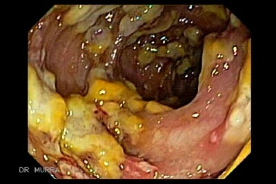
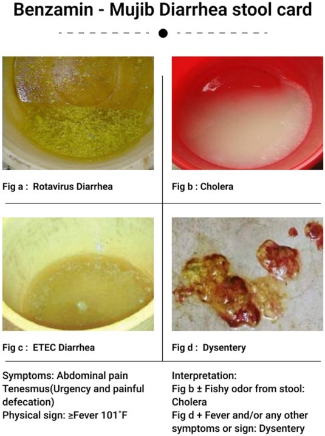
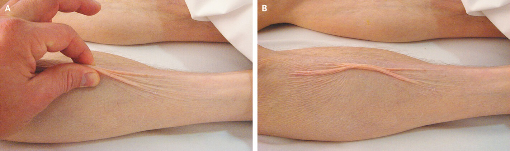
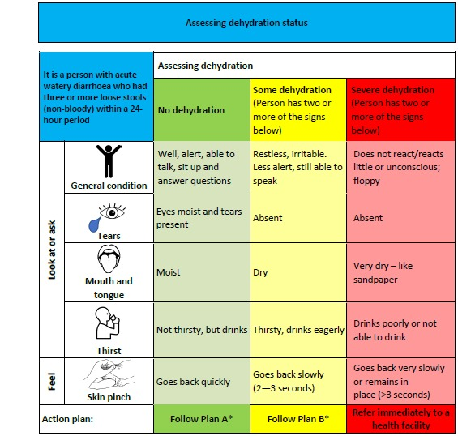

Sindromul Diareic Infecțios
Mecanisme fiziopatologice · Etiologie · Diagnostic diferențial · Principii terapeutice · Profilaxie
Bolile diareice infecțioase produc anual 3-5 miliarde de episoade la nivel mondial și 1,2-1,4 milioane de decese. În țările dezvoltate, etiologia este predominant virală (70-75%), dar cauzele bacteriene — deși reprezintă doar ~20% — sunt responsabile de cazurile severe, amenințătoare de viață. Ca MF, trebuie să diferențiezi rapid între diareea apoasă (mecanism secretor — prioritate: rehidratare) și diareea cu sânge și mucozități (mecanism inflamator — prioritate: antibiotic + contraindicație absolută la loperamid). Evaluarea corectă a deshidratării și decizia de internare pot salva vieți, mai ales la copii și vârstnici.
Definiții și epidemiologie
Boala diareică reprezintă un sindrom cu severitate variabilă, de la rapid autolimitant (cum se întâmplă în majoritatea toxiinfecțiilor alimentare), la amenințător de viață (cum se întâmplă în diareea cu Clostridium difficile, în special la pacienții vârstnici). Sindromul se caracterizează prin două elemente majore: creșterea frecvenței scaunelor și creșterea fluidității acestora, cu eliminarea zilnică a unei cantități mai mari de 300 g/24h de materii fecale.
Clasificarea temporală este esențială pentru orientarea diagnostică. Diareea acută are evoluție sub 14 zile și corespunde majorității bolilor diareice infecțioase. Diareea persistentă durează între 2 și 4 săptămâni, iar diareea cronică depășește 30 de zile — moment în care diagnosticul diferențial se lărgește considerabil spre cauze neinfecțioase. Excepție notabilă face diareea cu Clostridium difficile, care poate depăși 2 săptămâni de evoluție, iar dacă se includ și recidivele (frecvente la vârstnici și imunodeprimați), se poate discuta chiar de o diaree cronică infecțioasă.
Din perspectivă epidemiologică, la nivel mondial sunt raportate anual 3-5 miliarde de episoade de diaree și 1,2-1,4 milioane de decese. În timpul dezastrelor naturale, diareile reprezintă aproximativ 50% dintre cauzele de deces. Etiologia diferă în funcție de zona geografică: în țările în curs de dezvoltare predomină bolile diareice bacteriene (igienă precară, surse de apă contaminate), în timp ce în țările dezvoltate, infecțiile virale reprezintă 70-75% din cazuri.
Acută (<14 zile) = cel mai probabil infecțioasă → evaluează mecanismul (secretor vs. inflamator). Persistentă (14-30 zile) = reevaluează etiologia, exclude C. difficile și parazitare. Cronică (>30 zile) = extinde diagnosticul diferențial spre cauze neinfecțioase (IBD, neoplazie, malabsorbție).
B) GREȘIT — 500 g/zi este o diaree moderată-severă, dar nu este pragul definitoric.
C) GREȘIT — 200 g/zi este la limita superioară a normalului, dar nu definește diareea.
D) GREȘIT — 1000 g/zi ar corespunde unei diarei masive (tip holeriform), dar nu este pragul minim.
Etiologie
Bolile diareice infecțioase sunt caracterizate printr-o mare diversitate etiologică. Identificarea agentului cauzal orientează atât tratamentul, cât și prognosticul.
Etiologia bacteriană reprezintă doar aproximativ 20% dintre cauzele de diaree în țările dezvoltate, dar este responsabilă de cazurile severe, uneori amenințătoare de viață. Enterobacteriile (bacili Gram negativi aerobi) sunt principala cauză bacteriană: Salmonella enteritidis și S. typhimurium acoperă aproape 70% dintre toxiinfecțiile alimentare, iar Shigella spp. este principala cauză a dizenteriei bacteriene. Yersinia spp. și Campylobacter spp. produc toxiinfecții alimentare de obicei autolimitante, dar pot fi evocate la apariția complicațiilor tardive: artrita reactivă, sindromul Guillain-Barré, eritemul nodos. Escherichia coli produce boli diareice severe prin subtipurile sale: enterotoxigenă (ETEC — diareea călătorului), enteroaderentă și enterohemoragică (EHEC — risc de sindrom hemolitic-uremic la copii).
Stafilococul auriu (coc Gram pozitiv) este a doua cauză a toxiinfecțiilor alimentare, prin enterotoxina secretată de tipurile fagice I, III, IV. Sursa principală: focarele infecțioase cutanate și faringiene ale manipulatorilor de alimente.
Clostridiile merită atenție specială. Clostridium difficile produce colita pseudomembranoasă — o problemă crescândă de sănătate publică, legată de abuzul de antibiotice și distrugerea florei saprofite intestinale. Riscul de deces este semnificativ la vârstnici și imunodeprimați. Vibrio cholerae produce holera — prototipul diareii prin mecanism toxigen, cu pierderi lichidiene masive.
Etiologia virală (70-75% în țările dezvoltate) este dominată de Rotavirus la copii și Norovirus la adulți. Enterovirusurile au poartă de intrare digestivă și pot produce, pe lângă episodul diareic tranzitoriu, manifestări cutanate (boala mână-picior-gură), neurologice (meningite, paralizii) și cardiace. Coronavirusurile și adenovirusurile produc episoade diareice tranzitorii.
Protozoarele sunt importante mai ales la imunodeprimați: Isospora belli (diaree trenantă la pacienți HIV), Giardia lamblia (intestin subțire + căi biliare — diaree cu vărsături, scădere ponderală, malnutriție), Entamoeba histolytica (colonizare asimptomatică în 90% din cazuri, dar poate produce dizenterie amibiană și abcese hepatice), Cryptosporidium parvum (diaree secretorie masivă la imunodeprimați, cu manifestări respiratorii și hepatobiliare la distanță).
Paradoxul etiologic al diareii reflectă nivelul de igienă: în țările cu sanitație adecvată și acces la apă potabilă, bacteriile (care necesită de obicei un inocul mare — 10⁵-10⁸ UFC pentru Salmonella) sunt mai greu de transmis. Virusurile însă au inocul extrem de mic (10-100 particule pentru Norovirus) și rezistență crescută în mediu. De aceea, chiar și în spitale din țări dezvoltate apar epidemii nosocomiale cu Norovirus. Excepția: Shigella are inocul foarte mic (10-100 UFC), ceea ce explică de ce dizenteria apare și în condiții de igienă relativă.
B) GREȘIT — Shigella produce dizenterie comunitară (transmitere fecal-orală), nu este asociată cu antibioterapia intraspitalicească.
C) GREȘIT — Norovirusul produce diaree apoasă autolimitată, fără mucozități și de obicei fără febră semnificativă. Contextul de antibioterapie prelungită orientează altfel.
D) GREȘIT — Salmonella produce toxiinfecție alimentară, nu este legată de antibioterapie. Diareea post-antibiotică la vârstnic internalizat are altă etiologie.
Fiziopatologie — Cele 3 mecanisme ale diareii
Înțelegerea mecanismelor fiziopatologice este cheia întregului management al sindromului diareic, deoarece mecanismul dictează tratamentul. Nu toate diareile se tratează la fel — iar confundarea lor poate fi fatală (administrarea de loperamid într-o dizenterie bacteriană agravează evoluția).
Etapele producerii diareii parcurg o secvență logică: ingestia agentului microbian (cu un inocul suficient — variabil de la 10 UFC pentru Shigella la 10⁵-10⁸ pentru Salmonella) → depășirea barierelor naturale de apărare (lizozimul salivar, acidul gastric, motilitatea intestinală, mucusul, flora saprofită, IgA secretorie) → multiplicarea agentului la nivel intestinal. Barierele explică de ce pacienții cu gastrită hipoacidă sau sub tratament cu inhibitori de pompă de protoni fac mai ușor episoade diareice — acidul gastric este prima linie de apărare.
a) Diareea prin mecanism secretor (toxic)
În acest tip de diaree, agentul etiologic secretă o enterotoxină care stimulează adenilat ciclaza celulară → crește cantitatea intracelulară de AMPc → se deschide canalul de clor (eliminarea clorului în lumenul intestinal) și se blochează absorbția sodiului. Consecința: în tubul digestiv rămân cantități mari de clor și sodiu → apa urmează gradientul osmotic → diaree apoasă, voluminoasă, fără produse patologice (fără sânge, fără mucozități), fără febră în mecanismul toxic pur.
Prototipul: holera (Vibrio cholerae). Prin același mecanism: toxiinfecțiile alimentare cu Salmonella, Staphylococcus aureus, E. coli enterotoxigenă, Bacillus cereus, Clostridium perfringens.
Enterotoxina poate fi preformată în aliment (stafilococ, Bacillus cereus forma emetizantă, C. botulinum — incubație scurtă 1-6h) sau sintetizată în tubul digestiv după ingestia bacteriei (Salmonella, E. coli ETEC — incubație mai lungă 12-72h).
Tratament: Principala măsură = rehidratarea și reechilibrarea electrolitică. Antibioticele au indicații limitate: holera, toxiinfecția cu Salmonella la categorii de risc (imunodeprimați, purtători de proteze vasculare/osoase, vârste extreme). Durata antibioterapiei: maxim 5 zile.
Enterotoxina blochează absorbția pasivă a sodiului prin canalul Na⁺ dependent de AMPc. Dar cotransportul activ Na⁺-glucoză (transportor SGLT1) rămâne funcțional — nu este afectat de AMPc. De aceea, soluțiile de rehidratare orală (ORS) conțin glucoză: glucoza „trage" sodiul activ în enterocit, iar apa urmează osmotic. Acest mecanism, descoperit în anii 1960, a fost numit de The Lancet „cea mai importantă descoperire medicală a secolului XX" — salvează milioane de vieți anual fără nicio infrastructură spitalicească.
b) Diareea prin mecanism inflamator (citotoxic)
Agentul etiologic are factori de agresivitate suplimentari care permit penetrarea în celula intestinală. Odată pătrunsă în enterocit, bacteria se multiplică, determinând distrugerea celulei, denudarea mucoasei și paralizia plexului mienteric.
Consecințele clinice sunt dramatice: diaree de volum mic (fecalele stagnează de-a lungul colonului secundar paraliziei plexului mienteric), cu mucozități și sânge (din denudarea mucoasei), uneori cu aspect de scaune mucopiosanguinolente (spute rectale), dureri abdominale pe cadrul colonic, tenesme rectale (reflex de defecație dureros, cu eliminare minimă) și sindrom infecțios general (febră, frison, alterare stare generală). Riscul major: depășirea barierei digestive → sepsis.
Prototipul: dizenteria bacteriană (Shigella spp.). Același mecanism: E. coli enterohemoragică, Salmonella spp., Campylobacter spp., Clostridium difficile.

- Ce observi: Imagine colonoscopică ce arată multiple plăci gălbui-albicioase, aderente de mucoasa colonică, pe un fond de mucoasă intens congestionată și edematoasă. Acestea sunt pseudomembranele — compuse din fibrină, mucus, detritusuri celulare și neutrofile — patognomonice pentru infecția cu Clostridioides difficile. Între plăci, mucoasa apare hiperemică, cu zone de eroziune.
- Ce observi: Imagine colonoscopică ce arată multiple plăci gălbui-albicioase, aderente de mucoasa colonică, pe un fond de mucoasă intens congestionată și edematoasă. Acestea sunt pseudomembranele — compuse din fibrină, mucus, detritusuri celulare și neutrofile — patognomonice pentru infecția cu Clostridioides difficile. Între plăci, mucoasa apare hiperemică, cu zone de eroziune.
- Relevanță clinică: Acest aspect endoscopic este considerat diagnostic — identificarea pseudomembranelor la colonoscopie permite diagnosticul chiar înaintea rezultatului testului de toxine. Apare tipic după antibioterapie prelungită (cefalosporine, fluorochinolone, clindamicină) care distruge flora saprofită intestinală.
Tratament: Antibioticul este esențial. Sunt total contraindicate antidiareicele de tip loperamid și antispasticele.
Loperamidul inhibă peristaltismul intestinal, ceea ce în diareea inflamatorie prelungește contactul bacteriei cu mucoasa, agravează distrucția enterocitară și crește riscul de megacolon toxic și bacteriemie. Regula de aur: dacă scaunul conține sânge sau mucozități → NICIODATĂ loperamid. Aceeași interdicție se aplică și antispasticelor.
c) Diareea prin mecanism invaziv
Microorganismul depășește bariera intestinală și se multiplică în membrana bazală. Tabloul clinic: scaune de volum mic, fără sânge, dar cu semne de impregnare infecțioasă (febră, frison, cefalee, astenie). Riscul principal: diseminare la distanță → sepsis.
Prototipul: febra tifoidă (Salmonella typhi) și gastroenterocolitele virale (Rotavirus, Norovirus, enterovirusuri). Tratamentul depinde de etiologie: febra tifoidă necesită antibiotice, gastroenterocolitele virale necesită doar rehidratare și medicație simptomatică.
d) Diareea prin mecanism mixt — frecventă la enterobacterii (secretor + inflamator): pacientul asociază febră și diaree voluminoasă. Tratamentul include antibiotic.
Secretor (toxic)
- Diaree apoasă, voluminoasă
- Fără febră (mecanism toxic pur)
- Fără produse patologice
- Complicație: deshidratare
- Prototip: holera
- Tratament: REHIDRATARE ± antibiotic
- Loperamid: relativ permis (cazuri ușoare)
Inflamator (citotoxic)
- Diaree de volum mic, cu sânge și mucozități
- Febră, frison, alterarea stării generale
- Tenesme rectale, spute rectale
- Complicație: sepsis, megacolon toxic
- Prototip: dizenterie (Shigella)
- Tratament: ANTIBIOTIC obligatoriu
- Loperamid: CONTRAINDICAT ABSOLUT

- Ce observi: Patru tipuri de scaun diareic: (a) Rotavirus — scaun lichid, galben-verzui, omogen, fără produse patologice; (b) Holeră — scaun apos tip „apă de orez", albicios-tulbure, în cantitate mare; (c) ETEC — scaun lichid galben, similar cu Rotavirus, fără sânge; (d) Dizenterie — scaun de volum mic cu sânge vizibil, mucozități și fragmente de țesut, aspect mucopiosanguinolent.
- Ce observi: Patru tipuri de scaun diareic: (a) Rotavirus — scaun lichid, galben-verzui, omogen, fără produse patologice; (b) Holeră — scaun apos tip „apă de orez", albicios-tulbure, în cantitate mare; (c) ETEC — scaun lichid galben, similar cu Rotavirus, fără sânge; (d) Dizenterie — scaun de volum mic cu sânge vizibil, mucozități și fragmente de țesut, aspect mucopiosanguinolent.
- Ce sugerează: Aspectul macroscopic al scaunului orientează rapid mecanismul: scaunul apos (a, b, c) → mecanism secretor/invaziv viral → prioritate rehidratare; scaunul cu sânge și mucus (d) → mecanism inflamator → necesită antibiotic, INTERZIS loperamid.
- Diferențial vizual: Scaunul holeric (b) se distinge de cel rotaviral (a) prin culoarea albicioasă și mirosul „de pește". Scaunul dizenteric (d) nu trebuie confundat cu rectoragia din hemoroizi (sânge roșu viu pe scaun format) sau cu melena (scaun negru, lucios, din HDS).
B) GREȘIT — Intoleranța la lactoză produce diaree osmotică cronică/recurentă, legată de consumul de lactate. Nu explică mai mulți bolnavi de la același eveniment.
C) GREȘIT — Un mecanism autoimun nu explică debutul acut cu multiple cazuri simultane de la același eveniment alimentar.
E) GREȘIT — Mecanismul invaziv produce diaree de volum mic, fără sânge dar cu semne de impregnare (febră, frison). Aici nu avem febră, iar volumul este mare.
Diagnostic — de la anamneză la laborator
Diagnosticul bolilor diareice infecțioase se bazează pe trei piloni: epidemiologic, clinic și paraclinic. Abordarea sistematică permite orientarea rapidă și evitarea investigațiilor inutile.
Diagnosticul epidemiologic se obține din anamneză. Elementele critice sunt: alimentele consumate anterior debutului (carne insuficient gătită, ouă, lactate nepasteurizate, orez reîncălzit), obiceiuri alimentare particulare, existența de cazuri similare în anturaj (orientează spre toxiinfecție alimentară), contactul cu persoane din colectivități (creșe, spitale), sursa de apă, călătorii recente în zone la risc (diareea turistului), terapii prelungite cu antibiotice (C. difficile), utilizarea de IPP (scăderea barierei acide gastrice).
Diagnosticul clinic urmărește trei obiective: orientarea etiologică, evaluarea severității (mai ales gradul de deshidratare) și decizia privind necesitatea investigațiilor suplimentare.
Din anamneză se obțin: aspectul scaunului (apoasă vs. produse patologice), volumul, frecvența, durata, localizarea durerii (periombilical = intestin subțire, pe cadrul colonic = colon), prezența tenesme lor rectale, asocierea de simptome generale (febră, vărsături, alterarea stării de conștiență), toleranța digestivă.
Examenul clinic aduce elemente esențiale privind severitatea. Pentru evaluarea deshidratării se folosesc: pliul cutanat (revine lent = deshidratare), aspectul mucoaselor (uscate), aspectul globilor oculari (înfundați), pulsul, tensiunea arterială, prezența crampelor musculare și diureza.

- Ce observi: Două panouri (A și B) ce demonstrează testul pliului cutanat pe antebraț. În panoul A, examinatorul ciupește pielea între degetul mare și arătător, formând un pliu. În panoul B, pliul rămâne ridicat după eliberare — semn de revenire lentă (>2 secunde), indicând deshidratare semnificativă.
- Ce observi: Două panouri (A și B) ce demonstrează testul pliului cutanat pe antebraț. În panoul A, examinatorul ciupește pielea între degetul mare și arătător, formând un pliu. În panoul B, pliul rămâne ridicat după eliberare — semn de revenire lentă (>2 secunde), indicând deshidratare semnificativă.
- Relevanță clinică: Pliul cutanat cu revenire lentă (>2 sec) indică deshidratare moderată-severă și necesită cel puțin Plan B OMS (rehidratare orală sub supraveghere). Atenție: la vârstnici, pielea pierde elasticitatea fiziologic — pliul cutanat poate reveni lent și în absența deshidratării, reducând specificitatea testului la această categorie de vârstă.

Acest tabel OMS este instrumentul standard de triaj pentru deshidratare în boala diareică. Utilitatea practică: permite evaluarea rapidă la pat — fără laborator — prin 5 parametri simpli (starea generală, lacrimile, gura/limba, setea, pliul cutanat). Capcana principală: la vârstnici, pliul cutanat revine lent și fiziologic (pierderea elasticității dermice cu vârsta) — nu folosiți acest semn izolat la pacienți >65 ani. Plan A (fără deshidratare) = rehidratare orală la domiciliu. Plan B (deshidratare moderată) = ORS sub supraveghere 4h. Plan C (deshidratare severă = letargie/inconștiență, ochi înfundați, incapacitate de a bea, pliu persistent >3 sec) = trimitere imediată la spital pentru rehidratare i.v." data-sursa="https://epidemics.ifrc.org/volunteer/action/07-assessment-dehydration">Acest tabel OMS este instrumentul standard de triaj pentru deshidratare în boala diareică. Utilitatea practică: permite evaluarea rapidă la pat — fără laborator — prin 5 parametri simpli (starea generală, lacrimile, gura/limba, setea, pliul cutanat)....
Acest tabel OMS este instrumentul standard de triaj pentru deshidratare în boala diareică. Utilitatea practică: permite evaluarea rapidă la pat — fără laborator — prin 5 parametri simpli (starea generală, lacrimile, gura/limba, setea, pliul cutanat). Capcana principală: la vârstnici, pliul cutanat revine lent și fiziologic (pierderea elasticității dermice cu vârsta) — nu folosiți acest semn izolat la pacienți >65 ani. Plan A (fără deshidratare) = rehidratare orală la domiciliu. Plan B (deshidratare moderată) = ORS sub supraveghere 4h. Plan C (deshidratare severă = letargie/inconștiență, ochi înfundați, incapacitate de a bea, pliu persistent >3 sec) = trimitere imediată la spital pentru rehidratare i.v.
Diagnosticul paraclinic include:
Nespecific: Hemograma diferențiază orientativ între etiologia virală (limfocitoză) și bacteriană (leucocitoză cu neutrofilie). Sindromul inflamator biologic (CRP, fibrinogen, VSH) este prezent în bolile diareice bacteriene. Probele biochimice (uree, creatinină, ionogramă) evaluează complicațiile: insuficiența renală acută prerenală din deshidratarea severă, dezechilibrele electrolitice (hipokaliemie, hiponatremie).
Specific: Coprocitograma — fără leucocite și hematii în diareeile virale/toxiinfecții; cu leucocite și hematii în diareea inflamatorie. Coprocultura — se recoltează din zonele cu produse patologice (sânge, mucozități) pe medii specifice (Salmonella, Shigella, Vibrio). Determinarea de antigene Rotavirus (imunocromatografie) — la copii. Toxinele C. difficile (toxina A și B) — la pacienți cu diaree post-antibiotică. Coproparazitologic — examen microscopic direct pentru Giardia, Entamoeba, Cryptosporidium.
Orientarea diagnostică în funcție de aspectul scaunului
| Parametru | Diaree secretorie | Diaree inflamatorie |
|---|---|---|
| Aspect scaun | Apoasă, voluminoasă | Volum mic, sânge + mucozități |
| Febră | Absentă (mecanism toxic pur) | Prezentă |
| Dureri abdominale | Difuze, colicative | Pe cadrul colonic |
| Tenesme rectale | Absente | Prezente |
| Coprocitogramă | Fără leucocite/hematii | Cu leucocite + hematii |
| Hemogramă | Normală sau hemoconcentrare | Leucocitoză cu neutrofilie |
| Sindrom inflamator | Absent | CRP ↑, fibrinogen ↑ |
| Complicație majoră | Deshidratare | Sepsis |
Stomacul funcționează ca un adevărat „sterilizator acid" — pH-ul gastric de 1,5-3,5 distruge marea majoritate a bacteriilor și paraziților ingerați. Pacienții cu gastrită hipoacidă, gastrectomie sau tratament prelungit cu inhibitori de pompă de protoni (IPP) pierd această barieră și fac semnificativ mai ușor episoade diareice infecțioase, inclusiv infecția cu C. difficile. De aceea, în anamneză, întreabă mereu: „Luați medicamente pentru stomac?" — un IPP cronic poate fi factorul care a transformat un inocul insuficient într-o boală diareică.
Diagnostic diferențial și algoritm decizional
Diagnosticul diferențial al sindromului diareic are două direcții principale:
1. Diferențierea între diversele etiologii ale diareii infecțioase — mecanismul fiziopatologic (secretor vs. inflamator vs. invaziv) orientează către grupuri etiologice diferite. Contextul epidemiologic (aliment incriminat, călătorie, antibioterapie) restrânge și mai mult diferențialul. Confirmarea se face prin investigații specifice (coprocultură, antigene, toxine).
2. Diferențierea între diareea infecțioasă și diareea neinfecțioasă — mai ales în diareea persistentă sau cronică. Principalele cauze neinfecțioase de reținut: cancerul de colon (modificarea tranzitului la >50 ani + rectoragie + scădere ponderală → colonoscopie!), rectocolita ulcerohemoragică și boala Crohn (diaree cronică cu sânge, manifestări extraintestinale), polipii intestinali, diverticuloza colonică, sindroamele de malabsorbție (boala celiacă, insuficiența pancreatică), invaginația intestinală (la copii), infarctul mezenteric (abdomen acut la vârstnic cu fibrilație atrială) și falsa diaree a constipatului (supraflux lichidian peste un fecalom impactat — capcana clasică).
Investigațiile imagistice (rectosigmoidoscopie, colonoscopie, ecografie abdominală, CT abdominal) nu se folosesc de rutină, dar au un rol important în diferențierea diareilor infecțioase de cele neinfecțioase, mai ales când evoluția nu este cea așteptată.
B) GREȘIT — RCUH are evoluție cronică/recurentă cu manifestări extraintestinale. Nu explică debutul acut la un pacient cu FA.
C) GREȘIT — Dizenteria bacteriană are context epidemiologic (aliment, călătorie) și evoluție progresivă, nu debut brutal cu durere disproporționată.
D) GREȘIT — C. difficile apare în context de antibioterapie prelungită, nu de fibrilație atrială. Debutul nu este hiperacut cu durere disproporționată.
Principii terapeutice
Principiile terapeutice ale diareii infecțioase se bazează pe trei componente: terapia etiologică, terapia simptomatică/patogenică și hidratarea.
Terapia etiologică (antibioticele) are indicații precise, nu se administrează în orice diaree:
- Diareea inflamatorie (dizenterie) — antibioticul este esențial
- Diareea cu C. difficile — metronidazol (cazuri ușoare-moderate) sau vancomicină orală (cazuri severe/recidive); fidaxomicina ca alternativă
- Febra tifoidă — antibioterapie obligatorie (fluorochinolone, cefalosporine gen. III, azitromicină)
- Holera — doxiciclină 300 mg priză unică sau azitromicină
- Toxiinfecția alimentară cu Salmonella — antibiotic doar la categorii de risc (imunodeprimați, vârste extreme, purtători de proteze)
- Campylobacter — azitromicină (sensibilitate diminuată la fluorochinolone)
Antibioterapia diareii acute în funcție de etiologie
| Etiologie | Antibiotic de primă intenție | Alternative | Durată |
|---|---|---|---|
| Shigella spp. | Fluorochinolone | Cefalosporine gen. III, azitromicină | 3-5 zile |
| Salmonella spp. | Fluorochinolone | Cefalosporine gen. III, azitromicină | 3-5 zile (7 la imunodeprimați) |
| Vibrio cholerae | Doxiciclină 300 mg priză unică | Azitromicină (copii, gravide) | Priză unică |
| Campylobacter jejuni | Azitromicină | Fluorochinolone (sensibilitate scăzută) | 3-5 zile |
| C. difficile | Metronidazol 500mg x3/zi | Vancomicină orală, fidaxomicină | 10-14 zile |
| Yersinia spp. | Fluorochinolone | Cotrimoxazol, doxiciclină | 3-5 zile |
Terapia simptomatică și patogenică este singura măsură terapeutică în cele mai multe boli diareice acute (toxiinfecții alimentare și gastroenterocolite virale). Include: diosmectita (reduce durata diareii prin adsorbție), probiotice, antiemetice, antitermice și dietă (esențială — alimente ușor digerabile, evitarea lactatelor, a alimentelor grase și a fibrelor în exces).
Hidratarea și reechilibrarea electrolitică sunt piatra de temelie a tratamentului. Inițial intravenos (în deshidratare severă — Ringer lactat sau NaCl 0,9%), apoi oral (ORS — soluție de rehidratare orală cu glucoză + electroliți) imediat ce pacientul are toleranță digestivă. Trecerea cât mai rapidă la hidratare orală este un obiectiv terapeutic important.
DA antibiotic: diaree inflamatorie (sânge + febră), febra tifoidă, holeră, C. difficile, Salmonella la pacienți de risc. NU antibiotic: gastroenterocolite virale, toxiinfecții alimentare la imunocompetenți fără semne de gravitate. ATENȚIE: fluorochinolonele, deși eficiente, cresc riscul de C. difficile și au efecte adverse cardiace → se folosesc doar când nu există alternativă.
Profilaxie
Măsurile profilactice sunt esențiale și se împart în individuale și colective.
Măsurile individuale se referă la reguli elementare de igienă: spălarea mâinilor cu apă și săpun înainte de masă și după utilizarea toaletei, spălarea legumelor și fructelor, prepararea termică adecvată a alimentelor pe bază de carne și ouă. Acestea par banale, dar nerespectarea lor este cauza majorității episoadelor diareice.
Măsurile colective includ controlul calității apei potabile, controlul calității alimentelor (carne, ouă, lactate), verificarea periodică a personalului din colectivități sau din sectorul alimentar pentru depistarea purtătorilor sănătoși de patogeni intestinali.
Diareea călătorului merită atenție specială. Persoanele care călătoresc în zone cu incidență mare de boli diareice trebuie informate: utilizarea apei îmbuteliate (inclusiv pentru spălatul pe dinți), evitarea cuburilor de gheață (se fac din apa de rețea locală), evitarea alimentelor neprelucrate termic (salate, fructe nedecojite), evitarea alimentelor stradale. Profilaxia antibiotică (rifaximina) poate fi luată în considerare la călători cu factori de risc, dar nu se recomandă de rutină.
Componente interactive — Recapitulare
Secretor (toxic) — toxină → ↑AMPc → diaree apoasă, fără febră. Inflamator (citotoxic) — invazie enterocit → diaree cu sânge, febră. Invaziv — penetrare membrană bazală → diaree volum mic, semne sistemice.
Loperamidul (antiperistaltic) și antispasticele — prelungesc contactul bacteriei cu mucoasa, cresc riscul de megacolon toxic și bacteriemie.
Secretorie: holera (Vibrio cholerae) — diaree apoasă masivă, „apă de orez". Inflamatorie: dizenteria bacteriană (Shigella spp.) — scaune mucopiosanguinolente, tenesme rectale.
5 parametri clinici: starea generală (alert vs. letargic), lacrimile (prezente vs. absente), gura/limba (umedă vs. uscată „ca șmirghelul"), setea (bea normal vs. incapabil să bea), pliul cutanat (revine rapid vs. persistent >3 sec). Plan C (sever) = trimitere imediată la spital.
DA: diaree inflamatorie (sânge + febră), C. difficile, holeră, febra tifoidă, Salmonella la imunodeprimați. NU: gastroenterocolite virale, toxiinfecții alimentare la imunocompetenți.
Enterotoxina blochează absorbția pasivă Na⁺ (canal AMPc-dependent), dar cotransportul activ Na⁺-glucoză (SGLT1) rămâne funcțional. Glucoza din ORS „trage" Na⁺ activ în enterocit → apa urmează osmotic.
Familia de la grătar — toxiinfecție sau altceva?
Maria, 35 ani, fără antecedente patologice semnificative, se prezintă la cabinetul MF luni dimineața cu diaree de 36 de ore. Menționează că sâmbătă seara a participat la un grătar cu familia. Soțul (38 ani) și socrul (70 ani, cu diabet zaharat tip 2 și tratament cu metformină + omeprazol) au simptome similare. Soacra (68 ani) este asimptomatică — nu a mâncat salata de ouă.
Maria descrie >8 scaune/zi, apoase, voluminoase, fără sânge, fără mucozități, cu vărsături repetate în primele 12 ore (acum remise), dureri abdominale difuze de tip colicativ și absența febrei. Debutul a fost la 12 ore după masa respectivă. Menționează că salata de ouă a stat la temperatura camerei câteva ore.
B) GREȘIT — Vărsăturile precoce sunt tipice toxiinfecțiilor alimentare (mecanism toxic), nu specific virale. Virusurile au incubație mai lungă (24-72h).
D) GREȘIT — Durerile difuze, colicative sunt tipice mecanismului secretor (hipersecreție + hipermotilitate). Mecanismul inflamator produce dureri localizate pe cadrul colonic.
E) GREȘIT — Absența febrei nu exclude cauza bacteriană — în mecanismul secretor (toxigen), febra lipsește. Exclude doar mecanismul inflamator/invaziv.
La examenul fizic: TA 110/70 mmHg, AV 90/min, T 36.8°C. Mucoase relativ uscate, pliu cutanat la antebraț revine în ~2 secunde. Abdomen difuz sensibil la palpare, fără apărare musculară, zgomote intestinale vii. Fără iritație peritoneală. Maria este alertă, ușor obosită.
B) GREȘIT — Evaluarea clinică OMS se face fără laborator — aceasta este forța instrumentului. Ionograma este utilă dar nu este necesară pentru clasificarea OMS.
C) GREȘIT — Deshidratarea severă (Plan C) se caracterizează prin letargie/inconștiență, ochi înfundați, incapacitate de a bea, pliu cutanat persistent >3 sec. Maria este alertă și cooperantă.
D) GREȘIT — Are mucoase uscate și pliu cutanat cu revenire la 2 secunde — aceste semne indică cel puțin deshidratare moderată.
Maria tolerează lichide oral. Nu are febră, scaunele sunt apoase fără sânge.
B) GREȘIT — Nu toți pacienții cu toxiinfecție necesită internare. Maria este tânără, imunocompetentă, cu deshidratare moderată și toleranță digestivă.
C) GREȘIT — Maria are deshidratare moderată (Plan B OMS) și toleranță digestivă → rehidratarea orală este suficientă. I.v. este rezervat pentru Plan C (deshidratare severă) sau intoleranță digestivă.
E) GREȘIT — Antibioticul nu este indicat în toxiinfecția alimentară la imunocompetent fără febră, fără sânge în scaun, fără semne de gravitate. Ciprofloxacina ar crește riscul de C. difficile.
Socrul Mariei (70 ani, DZ tip 2, metformină + omeprazol cronic) are simptome similare dar mai severe: >12 scaune apoase/zi, vărsături persistente (nu tolerează lichide oral), astenie marcată. La examen: TA 90/55 mmHg, AV 115/min, mucoase foarte uscate, pliu cutanat persistent >3 secunde, somnolent.
B) GREȘIT — Socrul are deshidratare severă (Plan C OMS: somnolent, TA <90, pliu >3 sec) și nu tolerează lichide oral. Rehidratarea orală este insuficientă.
C) GREȘIT — Nu prezintă semne de iritație peritoneală (apărare musculară, contractură). Diareea cu sensibilitate abdominală difuză nu este abdomen acut chirurgical.
E) GREȘIT — Direcția este corectă (pacient de risc), dar nu poate fi gestionat în ambulator — vărsăturile persistente fac imposibilă administrarea orală.
Maria întreabă: „Ce să facem data viitoare ca să nu se mai repete?"
C) GREȘIT — Nu există vaccin anti-Salmonella de uz curent pentru profilaxia toxiinfecțiilor alimentare. Vaccinul anti-tifoida există, dar e pentru călători în zone endemice.
D) GREȘIT — Profilaxia antibiotică nu este indicată pentru toxiinfecțiile alimentare banale. Ar crește riscul de rezistență și de C. difficile.
E) GREȘIT — Nu este necesar să elimini ouăle din dietă. Problema nu sunt ouăle în sine, ci manipularea incorectă (temperatura, preparare insuficientă).
Diagnostic: Toxiinfecție alimentară prin mecanism secretor (probabil Salmonella, sursă: salata de ouă stocată incorect).
Lecții cheie: - Diaree apoasă + fără febră + mai mulți bolnavi = mecanism secretor → prioritate REHIDRATARE - Evaluarea deshidratării OMS (5 parametri clinici) dictează conduita: Plan A (domiciliu), Plan B (ORS sub supraveghere), Plan C (internare + i.v.) - Antibioticul NU este indicat în toxiinfecția alimentară la imunocompetent - Vârstnicii cu comorbidități (DZ, IPP cronic) au risc semnificativ mai mare de evoluție severă → prag scăzut de internare - Prevenția prin igienă alimentară (lanțul frigului) este mai eficientă decât orice medicament